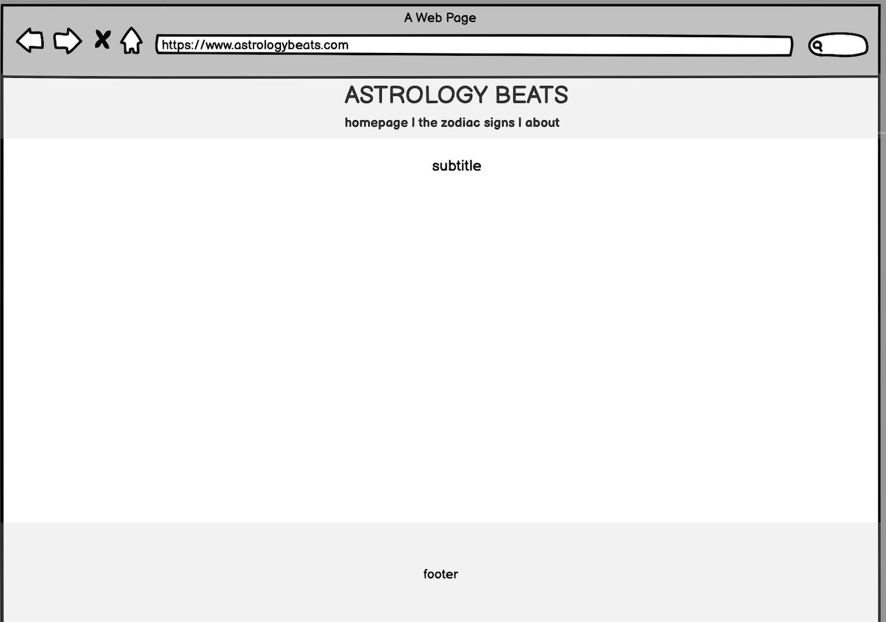

the creator of this web site is a student at the Communication Sciences Faculty of the University of Bologna. this project was indeed developed for one of the exams: the main idea is to use our star correlation to create playlist that each of the zodiac signs can listen, enjoy & hopefully feel represented by.
each zodiac sign has its own page where you can find a selected playlist and few pictures that could remind of the aesthetic of it, creating a full immersion inside of the signs world. you can also try and match the playlists according to your big three (sun sign, moon sign, rising sign).
hope you all have an amazing journey escaping from reality to explore the celestial bodies (guided by music). for any further informations contact us at: astrologybeats@gmail.com or visit our Instagram page
ABSTRACT
ho sviluppato questo progetto ispirandomi alle diverse playlist “secondo i tuoi gusti” che ci vengono proposte dalle intelligenze artificiali, come “Daily Mix” di Spotify o “Receiptify”, personalizzandolo e ipotizzando possibili preferenze che accomunano alcune persone a seconda del loro segno zodiacale.
BENCHMARKING
OBIETTIVI: proporre playlist composte da canzoni in cui le persone si riconoscano. allo stesso tempo fornirne di nuove così che gli ascoltatori possano venire a conoscenza di nuovi artisti e generi. inoltre scoprire in che percentuale può essere considerata effettiva la correlazione tra segno zodiacale ed interessi.
TARGET: tutti coloro che credono nell’astrologia, coloro che sono incuriositi, ma anche chi non ne è interessato. in generale, tutti i soggetti che sono alla ricerca di nuova musica e sono attratti dalla possibilità di sentirsi rappresentato da alcune canzoni scelte per lui “dalle stelle”
COMPETITORS: Spotify fornisce playlist sviluppate da loro a seconda dei vari segni zodiacali, si tratta di playlist contenenti 50 canzoni quindi molto vaste ma poco personalizzate o originali. Zodiac Affinity cerca nel tuo profilo personale canzoni che siano affini al tuo segno zodiacale; connettendoti al tuo profilo, vengono proposte canzoni che sono già presenti all’interno delle proprie playlist, dando una connotazione più personale. il sito è semplice e non arricchito di ulteriori nozioni.
STRUTTURA & LAYOUT
ARCHITETTURA: il sito web è strutturato in 3 pagine principali, due delle quali portano a pagine secondarie dedicate al tema centrale del sito, cioè 12 pagine ognuna delle quali si focalizza su un segno zodiacale diverso
WIREFRAME:
homepage
the zodiac signs
each zodiac sign
about
LOOK & FEEL: la scelta di font e colori è incentrata prevalentemente sulla combinazione tra un tema galattico/astrale e una tendenza ispirata agli anni ’80/’90. si può notare una prevalenza del colore bianco, spesso utilizzato per i titoli o gli slogan principali, alternato dall’utilizzo del colore viola, che va a riprendere la color scheme della foto utlizzata come sfondo. l’idea è quella di utilizzare l’immagine come sfondo di body, per poi colorare lo sfondo delle diverse section così da differenziarle tra loro, inoltre per ogni segno zodiacale è stato attribuito un colore diverso di sfondo per dargli più personalità.
il titolo principale e il nome di ogni segno zodiacale sono stati scritti con un font che cattura l’attenzione dell’utente in quanto, essendo vuoto all’interno, riprende il colore di sfondo. mentre per i sottotitoli è stato utilizzato un font sans-serif, in grado di indirizzare lo sguardo dell’utente verso quelle che sono le azioni principali da compiere nella pagina. infine, per il corpo testo e le informazioni aggiuntive in footer è stato utilizzato un font slim che aiutasse e velocizzasse la lettura.
LINGUAGGI & STRUMENTI
LINGUAGGI WEB: HTML e CSS
TOOLS: GitHub (pubblicazione), Pinterest (immagini), Spotify (playlist), Bootstrap (elementi di grafica), GoogleFont (font), Font Awesome (icone), Adobe Color (scelta dei colori), Balsamiq (wireframe e struttura sito), Google Analytics (monitoraggio sito)
BACKGROUND
ogni utente, che abbia un profilo Spotify, Apple Music e quant’altro, è in grado di creare playlist che cercano di avvicinarsi ai gusti di ogni segno zodiacale. io ho sviluppato la mia idea chiedendo alle mie amiche (12 ragazz* di segno zodiacale diverso) di selezionarmi una decina di canzoni tra le loro preferite, e ho deciso di creare un sito dove queste potessero essere contenute ed arricchite da informazioni secondarie.
OBIETTIVI COMUNICATIVI
il mio progetto ha l’intento di proporre un’esperienza a 360° per gli interessati: è possibile entrare nel mondo di ogni segno e conoscerlo più a fondo sotto l’aspetto musicale, accompagnato da qualche decorazione che ricordi l’aesthetic di questo. gli obiettivi che il progetto si pone (in termini di comunicazione sono):
TARGET
astrology beats è indirizzato a chiunque sia interessato a saperne qualcosa di più sul mondo dell’astrologia, ma anche a chi vuole scoprire nuova musica, e specialmente a chi è curioso di scoprire quali canzoni sono state associate al proprio segno zodiacale.
PROMOZIONE
sarà principalmente incentrata sul profilo Instagram e tramite la condivisione del link su Whatsapp e passaparola
VALUTAZIONE DEI RISULTATI
sono stati utilizzati strumenti come Google Analytics per monitorare le interazioni che gli utenti hanno avuto con il sito web; e gli Insight di Instagram per controllare l’engagement con post, stories e profilo. i risultati sono stati valutati positivamente rispetto agli obiettivi prefissati.